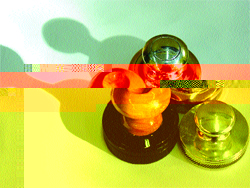
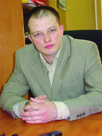
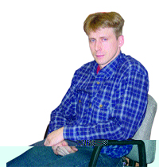
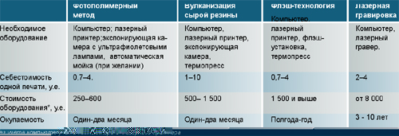
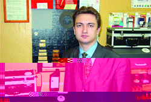

За семью печатями
Что такое печать, примерно понятно каждому из нас. Со штампами и нумераторами, экслибрисом, факсимиле и датерами уже хуже. Но мало кто догадывается, что изготовление печатей — неплохой способ заработать. Это несложный бизнес, на start-up которого требуются небольшие деньги, скромное помещение, притом что себестоимость продукта составляет около 10 рублей, а продают их примерно за 100–600 «деревянных».
Резьба печатей известна человечеству уже много веков. В Китае гравирование слов на различных материалах — от дерева до хрусталя — называли «жуан ке». Печать ставили на каждом свитке. Издавна она отражала мастерство автора как каллиграфа и резчика, и ремесло это требовало недюжинного внимания и таланта, усидчивости. Зато и работа ценилась высоко.
Штамповка и сноровка
Современное производство печатей требует совершенно других талантов — знания графических компьютерных программ, основных этапов технологического процесса, сноровки. Прибавьте к этому небольшое помещение, компьютер, лазерный принтер и немного денег для закупки специального оборудования и раскрутки. В 2002 году лицензирование производства штемпельной продукции отменили, вход на рынок стал легким, теперь для начала достаточно зарегистрироваться в качестве предпринимателя, и… вперед!
А куда, собственно, вперед? Что представляет собой рынок штемпельной продукции? Уникальность бизнеса — в колоссальной разнице между себестоимостью и отпускной ценой конечного продукта. «Еще одно преимущество сегмента — услуга востребована повсеместно, на всей территории страны, во всех городах без исключения. И спрос на эту продукцию едва ли исчезнет, — уверен Вадим Горбунов, генеральный директор компании «Печати.ру». — О потенциале рынка свидетельствует карта наших региональных клиентов, которые регулярно покупают оборудование и расходные материалы». Коренным образом, по мнению экспертов, отличаются разве что Москва и Санкт-Петербург, где существенной статьей расходов являются затраты на рекламу и предложение фактически сравнялось со спросом. Так, на территории Москвы услуги по изготовлению печатей оказывают около трехсот предприятий, из них 90% используют фотополимерную технологию — самый простой и дешевый способ изготовить печать. Молчит статистика и о количестве частных мастеров, объявлениями которых «ПЕЧАТИ, ШТАМПЫ, КОНФИДЕНЦИАЛЬНО, НЕДОРОГО» обвешаны московские столбы. Ясно одно — их достаточно много, и работы хватает для всех. «Конкуренция на этом рынке — видимость, фикция» — считает Евгений Зябриков, заместитель генерального директора компании «Печати.ру». Клиентская база каждого штемпелеизготовителя очень обширна, и на ее формирование влияет целый ряд факторов, среди которых далеко не самый главный — ценовая политика. По сравнению со столицей региональный рынок имеет свои особенности. Вадим Горбунов и Евгений Зябриков из компании «Печати.ру» полагают, что в среднем спрос на штемпельную продукцию 50 тысяч жителей городского населения способна удовлетворить одна компания. Преимущества регионального производства очевидны: более низкие затраты на персонал, коммунальные платежи и арендную плату, минимальные расходы на рекламу. Если у вас уже есть офис, то для производства печатей достаточно одного стола.
При желании можно совершенно спокойно «штамповать» продукцию у себя дома. Главное — найти заказчиков и сформировать постоянную клиентуру. В идеале, считает Вадим Горбунов, руководитель компании «Печати.ру», вам понадобится дизайнер-верстальщик, который будет рисовать эскизы в графической программе, полимерщик (оператор фотополимерной машины) и администратор, главной задачей которого будет прием и выдача заказов.
Однако остановимся на мгновение и разберемся, что представляет собой процесс изготовления печати. Существует несколько распространных технологий. Но можно выделить общие для всех этапы:
— поиск заказчика;
— получение заказа, включающего пожелания, какой должна быть печать (типовые образцы утверждают регистрирующие органы), документы о регистрации фирмы, готовый эскиз. Если эскиза будущей печати нет, его необходимо нарисовать (и не забудьте взять за это 3–10 у.е.);
— вывод эскиза на негативную или позитивную пленку на лазерном принтере (этот этап пропускается, если мы имеем дело с «машинкой» StampCreator PRO фирмы Brother, которая напрямую через порт принтера или мыши подключается к компьютеру. Стоимость такой установки — 1 800 у.е. Верстальщик рисует эскиз будущей печати, нажимает кнопку… дальше все делает умный аппарат. Благодаря драйверам, компьютер читает устройство как принтер;
— материализация клише (во всех технологиях — по-разному), включающая в себя ряд операций;
— монтаж клише в оснастку с помощью клея или скотча.
Опасность конкуренции потенциально в этом сегменте есть, однако скажется она, скорее, на объеме заказов, чем на ценовой политике, уверены в «Печати.ру». Потому что до столичного насыщения региональному рынку еще далеко. Ситуация в штемпельной отрасли очень схожа с нотариальными конторами — человек едет чаще всего туда, куда ближе и где ему предоставят относительно нормальный сервис. Цены же на печать не так высоки, чтобы отправляться в путешествие на другой конец города ради небольшой экономии. Разброс отпускных цен на печати очень большой. В Тюмени фотополимерная печать с оснасткой стоит 300 рублей, а красконаполненная — 900. В Челябинске цены на порядок ниже.
Флэш-технология позволяет изготавливать многоцветные печати. Они красивы, их непросто подделать, зато можно продать дороже: притом что себестоимость клише остается низкой. Прибавляется работы верстальщику, разрабатывающему эскиз. Отпускная же цена увеличивается вдвое!
«Есть отдельные предприниматели, которые готовы изготавливать печати за любые деньги — за 50, 70 рублей, — сетует Вадим Горбунов. — Это означает лишь то, что они не умеют правильно рассчитать собственные затраты. Долго ли проработает фирма, руководство которой не понимает элементарных экономических законов?» Нужда толкает демпингующих даже на криминальные заказы — подделку печатей. Чаще всего «левые» заказы несложно вычислить по отсутствию необходимых документов предъявляемой документации и ряду наводящих вопросов. Законодательство пока лояльно относится к процессу производства штемпельной продукции, поэтому ответ на вопрос, брать или не брать заказы на подделку, лежит целиком на совести изготовителя. Но помните и принцип Остапа Бендера: чтите Уголовный Кодекс.
Отпускная цена печати складывается не только из себестоимости клише, но и стоимости оснастки. Оснастка — это то, куда вставляется клише готовой печати. Оснастки бывают ручные (пластмассовые, деревянные, металлические) и автоматические со встроенной штемпельной подушкой, российского и зарубежного производства.
Особой оснастки требуют красконаполненные печати, изготовленные по флэш-технологии, поскольку печать пропитывается чернилами. В компании «Новые штампы» сначала продавали только японские оснастки, однако стремление пойти навстречу региональным заказчикам оборудования и «расходников» вынудило снижать себестоимость. Теперь оснастку для красконаполненных штампов отливают в Москве, стоит она около 3 у.е.
Большинство компаний не только в Москве, но и в регионах перешло на дистанционное изготовление печатей. Клиенты должны отправить по электронной почте файлы эскизов печатей и штампов в нужном формате и выбрать материал и оснастку. Когда печать будет готова (а это может быть сделано в течение одного часа), вы можете с курьером отправить ее прямо клиенту в офис или по почте. «К примеру у нас, — говорит Горбунов Вадим, — есть заказчики штемпельной продукции и на Украине, и в Архангельске и на Магадане».
Выбор технологии
На данный момент существуют четыре распространенные технологии изготовления штемпельной продукции: фотополимерная, вулканизация сырой резины, флэш-метод и лазерная гравировка.
Фотополимерная технология — дешевая , качественная и поэтому очень популярная. Вадим Горбунов, генеральный директор компании-поставщика штемпельного оборудования «Печати.ру», советует начинать именно с этого уровня: невысокие затраты на организацию. Основные достоинства фотополимерной технологии: относительно быстрый технологический процесс, низкая себестоимость клише (0,3 долллара, или 10 рублей), безвредное производство. Однако есть и недостатки. Основной — нужна проточная вода, или придется купить автоматическую мойку (от 250 у.е.). Кроме того, изготовление полимерных печатей — во многом ручная работа. Да и полимеры — материал недолговечный и быстро изнашивается.
Изготовление печатей из резины методом вулканизации тоже недорогая технология, но при этом печати получаются качественнее. Однако процесс изготовления длителен и трудоемок, опять же без «ручного труда» не обойдешься. Главное, что стоит запомнить сразу, — резина очень сильно… пахнет при вулканизации.

Флэш-метод практически полностью автоматизирован и настолько прост, что им легко овладеет десятилетний ребенок. Для производства оттиска на клише печати используется специальное обрудование — флэш-установки. Они компактны, легки, удобны в обращении и легко поместятся на краешке офисного стола.
Печати, изготовленные по флэш-технологии, не имеют рельефа, в отличие от полимерных и резиновых. Для флэша нужна особая мелкопористая резина с высокой разрешающей способностью. Однако за один цикл можно изготовить только одну печать. А фотополимерная технология позволяет одновременно «засветить в камере» несколько клише.
Лазерная гравировка — очень современная и технологичная штука. Однако у нее есть один большой недостаток — цена оборудования. Минимальная сумма для начала — 8 тысяч долларов. Средняя цена качественного лазерного гравера — 15–20 тысяч. Очевидно, что для малого бизнеса на этапе становления это неподъемно. Обычно такие «навороченные» установки приобретают компании, хорошо закрепившиеся на рынке, которые расширяют ассортимент услуг. Основным достоинством этого метода остается cверхвысокая разрешающая способность.
Оборудование для «штамповки»
Рынок оборудования для штемпельного производства достаточно насыщен. Так, в Москве действуют несколько крупных поставщиков: «Графика-М», «Тродат XXI», «Новые штампы», «Печати.ru». При желании легко можно найти оборудование под любую из четырех существующих технологий. Это недорогие экспонирующие камеры для производства фотополимерных печатей российского производства в виде маленького удобного чемоданчика или в эргономичном пластиковом корпусе (Soligor от 380 у.е., PLC от 320 у.е. от «Печати.ру»). Компания «Печати.ru» осуществляет бесплатную доставку оборудования и расходных материалов по всей России. Экспонирующие камеры от VitStamp (несертифицированные от 230 у.е.), термопрессы для вулканизации резины (около 500–700 у.е.), японские флэш-установки TAIYO для красконаполненных печатей («Новые штампы» — от 1 500 у.е.), уникальная флэш-система Brother («Печати.ру» — 1 800 у.е.), самые дешевые лазерные граверы — Lazer Pro Venus V12 — от 8 000 у.е, резаки для вырезания круглых печатей ( 150 у.е.), полный спектр расходных материалов. Кстати, предприниматели из компании «Печати.ру» стартовали не так давно, началось все с попытки работать на оборудовании, которое предлагал рынок. Оно показалось огромным, тяжелым и неудобным. Появилась идея изготовить свою модель. Вскоре модель стала пользоваться спросом.

Расходные материалы для каждой технологии разнообразны: флакон жидкого полимера, защитная пленка (130 рублей за 10 метров), бордюрная липкая лента (20 метров — 230 рублей). Для вулканизации сырой резины потребуется листовая сырая резина (250 рублей за килограмм), матричный картон (650х650мм, 1 550 рублей за лист), твердый фотополимер на металлической основе (лист A4, 600 рублей). Для флэш-технологии — специальные заготовки резины с термопроводящим покрытием.
Остановимся подробнее на самой дешевой и популярной технологии — фотополимерном изготовлении печатей. Что вам понадобится? По словам опытных производителей, минимальный комплект расходных материалов включает в себя 1 кг полимера, 1 рулон бордюрной ленты, 25 листов матовой и прозрачной пленки. При этом одной пачки пленки хватит на 300–1 500 печатей, одного рулона бордера – на 150, одного баллона спрея — на 1000 и одного килограмма полимера стоимостью 500–700 рублей — на 100–150 печатей.
Освоив производство печатей, вы можете поставлять оборудование в свой регион, как это делают во Владивостоке клиенты московской компании «Новые штампы».
В стоимость оборудования компаний-поставщиков входит обучение — два часа новичок осваивает работу на установках. К каждой экспонирующей камере прилагается полное описание технологического регламента с описанием возможных ошибок и методов их устранения. В комплекте и краткое руководство по Corel Draw с пошаговыми инструкциями по прорисовке печатей. Вся продукция крупных поставщиков находится на гарантии. В «Печати.ру» вам заменят оборудование, если в ходе доставки оно повредится. В общем, дерзайте! И поверьте: научиться делать печати легко — достаточно лишь уметь их рисовать и хотя бы один раз проделать все своими руками.
|
Перечень услуг компании-изготовителя штемпельной продукции
1. Изготовление новых печатей
В частности:
— Печати юридических лиц
Основные ваши клиенты — это юридические лица и частные предприниматели (ПБОЮЛ), которым необходима печать для деятельности, согласно российскому законодательству. Печати нужны и органам власти, государственным и региональным. Некоторым «печатникам» успешно удается сотрудничать с юридическими конторами, оказывающими услуги по регистрации готовых предприятий. Они поставляют поток клиентов и берут свою комиссию. Однако генеральный директор компании «Печати.ру» Вадим Горбунов относится к такому сотрудничеству скептически, работать с «регистраторами» утомительно и тяжело: «Нередко они ведут себя просто некорректно. При общей стоимости их услуг (а это 400–500 долларов), они торгуются за каждую копейку стоимости печати, буквально за тысячную процента. Мы неоднократно предпринимали попытки сотрудничества и каждый раз натыкались на подобную мелочность и жадность».
— Гербовые печати
Государственным органам власти нужны особые печати — гербовые, с четким изображением Российского герба. На сегодняшний момент, по свидетельству Максима Ионова, начальника отдела маркетинга компании «Новые штампы», производство гербовых печатей составляет около 5% рынка по России и 10% рынка в Москве. Как только примут новый ГОСТ о печатях с изображением герба, штанс-мастерам придется либо отказаться от этой доли, если они изготавливают печати фотополимерным способом, либо докупить дорогостоящее оборудование.
— Прочая штемпельная продукция
Печати для внутреннего пользования, к ним относятся разного рода бухгалтерские печати «получено», «оплачено», датеры, проставляющие дату, и нумераторы (печати с цифрами).
— Факсимиле
Очень часто, когда необходимо поставить автограф на большом количестве документов, помогут факсимиле (печать с оттиском вашей подписи).
2. Восстанавление использованных печатей по клише или по оттиску
Эта услуга стоит в районе 10–30 у.е.
3. Стать дилером компании-поставщика оборудования и расходных материалов |
 Заказать изготовление печатей Заказать изготовление печатей
Информация
|